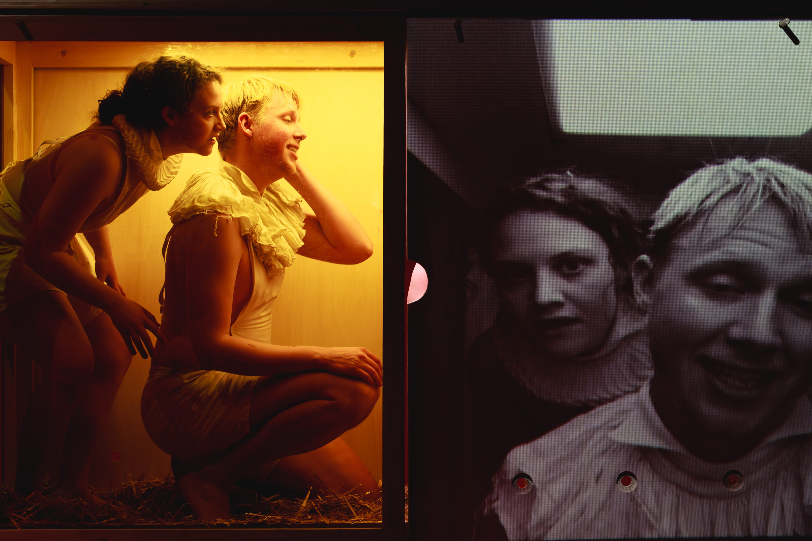

Café Populaire
Premiere 6.4.2023, Landestheater Linz Studiobühne



Schauspiel
ROLLE: SVENJA
Regie: Lisa Katrina Mayer; Ausstattung: Dominik Freynschlag; Choreo: Iris Heitzinger
mit Alexandra Nedel, Hanna Kogler und Joel Dufey